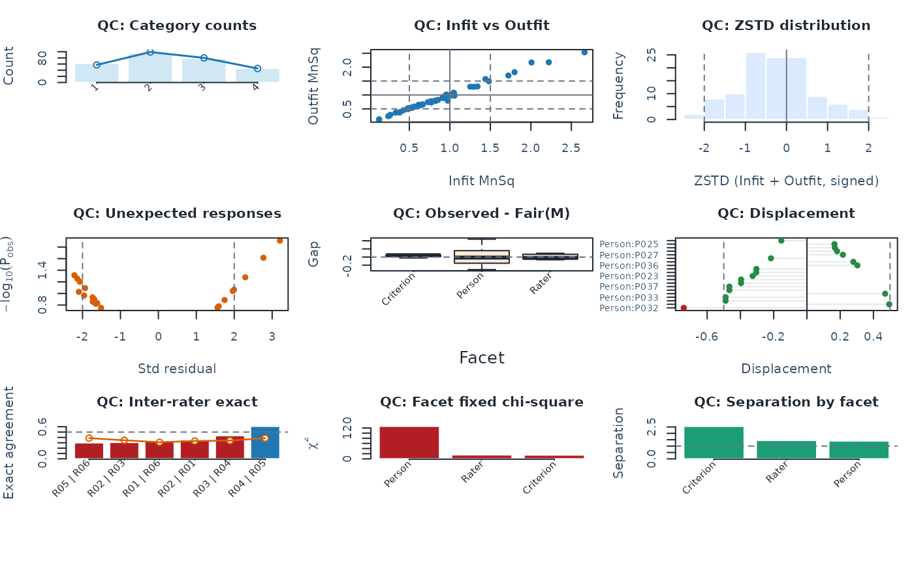

Plot a base-R QC dashboard
Usage
plot_qc_dashboard(
fit,
diagnostics = NULL,
threshold_profile = "standard",
thresholds = NULL,
abs_z_min = 2,
prob_max = 0.3,
rater_facet = NULL,
interrater_exact_warn = 0.5,
interrater_corr_warn = 0.3,
fixed_p_max = 0.05,
random_p_max = 0.05,
top_n = 20,
draw = TRUE,
preset = c("standard", "publication", "compact", "monochrome")
)Arguments
- fit
Output from
fit_mfrm().- diagnostics
Optional output from
diagnose_mfrm().- threshold_profile
Threshold profile name (
strict,standard,lenient).- thresholds
Optional named threshold overrides.
- abs_z_min
Absolute standardized-residual cutoff for unexpected panel.
- prob_max
Maximum observed-category probability cutoff for unexpected panel.
- rater_facet
Optional rater facet used in inter-rater panel.
- interrater_exact_warn
Warning threshold for inter-rater exact agreement.
- interrater_corr_warn
Warning threshold for inter-rater correlation.
- fixed_p_max
Warning cutoff for fixed-effect facet chi-square p-values.
- random_p_max
Warning cutoff for random-effect facet chi-square p-values.
- top_n
Maximum elements displayed in displacement panel.
- draw
If
TRUE, draw with base graphics.- preset
Visual preset (
"standard","publication","compact", or"monochrome").
Details
The dashboard draws nine QC panels in a 3\(\times\)3 grid:
| Panel | What it shows | Key reference lines |
| 1. Category counts | Observed (bars) vs model-expected counts (line) | – |
| 2. Infit vs Outfit | Scatter of element MnSq values | heuristic 0.5, 1.0, 1.5 bands |
| 3. |ZSTD| histogram | Distribution of absolute standardised residuals | |ZSTD| = 2 |
| 4. Unexpected responses | Standardised residual vs \(-\log_{10} P_{\mathrm{obs}}\) | abs_z_min, prob_max |
| 5. Fair-average gaps | Boxplots of (Observed - FairM) per facet | zero line |
| 6. Displacement | Top absolute displacement values | \(\pm 0.5\) logits |
| 7. Inter-rater agreement | Exact agreement with expected overlay per pair | interrater_exact_warn |
| 8. Fixed chi-square | Fixed-effect \(\chi^2\) per facet | fixed_p_max |
| 9. Separation & Reliability | Bar chart of separation index per facet | – |
threshold_profile controls warning overlays. Three built-in profiles
are available: "strict", "standard" (default), and "lenient".
Use thresholds to override any profile value with named entries.
For bounded GPCM, the dashboard now reuses the residual-based
diagnostics stack and marks the fair-average panel unavailable rather
than silently reusing the Rasch-only compatibility calculation.
Plot types
This function draws a fixed 3\(\times\)3 panel grid (no plot_type
argument). For individual panel control, use the dedicated helpers:
plot_unexpected(), plot_fair_average(), plot_displacement(),
plot_interrater_agreement(), plot_facets_chisq().
Interpreting output
Recommended panel order for fast review:
Category counts + Infit/Outfit (row 1): first-pass model screening. Category bars should roughly track the expected line; Infit/Outfit points are often reviewed against the heuristic 0.5–1.5 band.
Unexpected responses + Displacement (row 2): element-level outliers. Sparse points and small displacements are desirable.
Inter-rater + Chi-square (row 3): facet-level comparability. Read these as screening panels: higher agreement suggests stronger scoring consistency, and significant fixed chi-square indicates detectable facet spread under the current model.
Separation/Reliability (row 3): approximate screening precision. Higher separation indicates more statistically distinct strata under the current SE approximation.
Treat this dashboard as a screening layer; follow up with dedicated helpers
(plot_unexpected(), plot_displacement(), plot_interrater_agreement(),
plot_facets_chisq()) for detailed diagnosis.
Typical workflow
Fit and diagnose model.
Run
plot_qc_dashboard()for one-page triage.Drill into flagged panels using dedicated functions.
Examples
# \donttest{
# Load the package and example ratings
library(mfrmr)
toy <- load_mfrmr_data("example_operational")
# Fit the model
fit <- fit_mfrm(
data = toy,
person = "Person",
facets = c("Rater", "Criterion"),
score = "Score",
method = "MML",
model = "RSM"
)
# Compute diagnostics once for the following checks
diagnostics <- diagnose_mfrm(fit)
# Read the interpretation status before reviewing the quality-control (QC) panels
review <- summary(diagnostics)
review$decision
#> Interpretation FormalInference FitReadiness
#> 1 Ready for formal inference Yes ready
#> Why
#> 1 All stored fit-readiness components passed.
#> NextAction
#> 1 Inspect `diagnostic_basis` before comparing legacy residual evidence with strict marginal evidence.
# Draw the dashboard and save its data
qc <- plot_qc_dashboard(fit, diagnostics = diagnostics)

# Inspect the counts behind the category panel
qc$data$category_stats[, c("Category", "Count", "ExpectedCount")]
#> # A tibble: 4 × 3
#> Category Count ExpectedCount
#> <int> <dbl> <dbl>
#> 1 1 62 57.2
#> 2 2 96 99.0
#> 3 3 78 80.1
#> 4 4 46 45.6
# Use focused plots such as plot_marginal_fit(diagnostics) to investigate a panel
# }